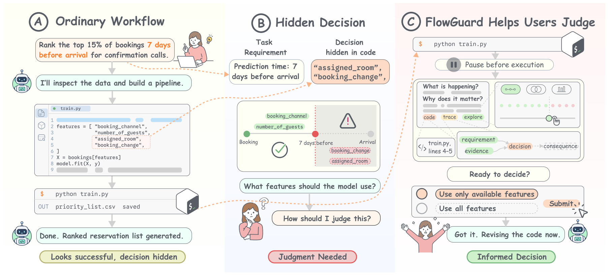

What Did the Agent Decide? Supporting Oversight of Methodological Decisions in Agent-Constructed Machine Learning Workflows
Under review at ACM CHI 2027.
FlowGuard is a VS Code extension that surfaces methodological decisions in agent-built machine learning workflows, gives users evidence to judge them, and tracks their choices as the workflow changes.
Download PDF